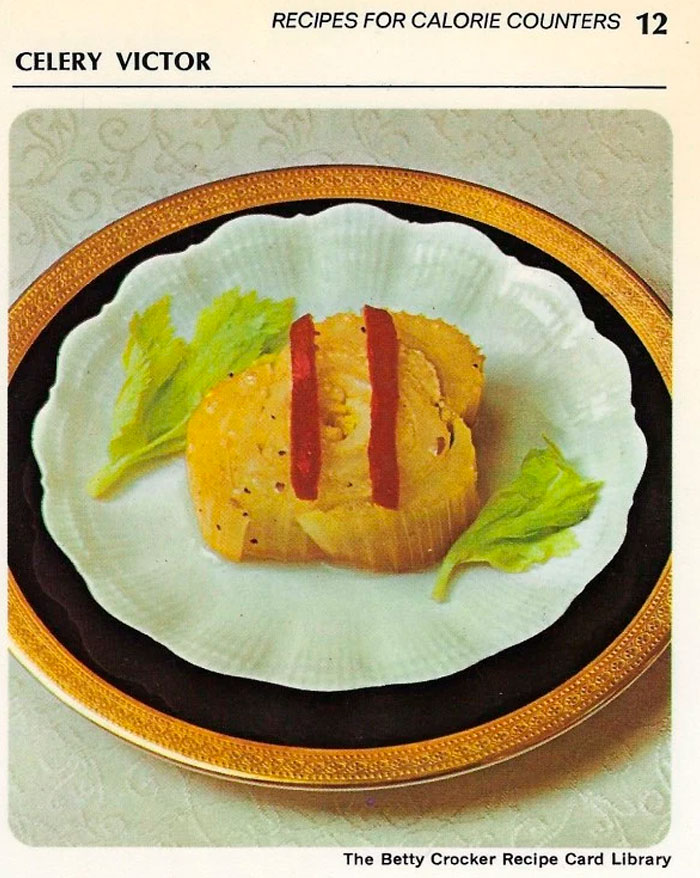

Celery Victor

Exquisite Gourmet Fine Dining Entree
Looking for a dish that isn't a Frozen Cheese Salad? Look no more, I introduce you to the Celery Victor! This fine gourmet entree features sliced celery seasoned with the finest herbs and topped with a low calorie dressing to fit your nutritional and dietary needs.
Ingredients
- 1 bunch celery
- 1 cup water
- 1 beef bouillon cube
- 1/4 cup low calorie Italian salad dressing
- Pimiento strips
Instructions
Pimiento Strips
- Trim root end off celery but do not separate stalks. Remove leaves and coarse outer stalks. Cut celery bunch crosswise once so bottom section is 5 inches long. Cut bottom section crosswise into quarter; tie quarters with string.
- To serve, place a bundle cut side down on each salad plate; remove string. Top with pimiento strips. 4 servings (30 calories each).
Celery Victor II
- Pour 1/4 cup low calorie Italian salad dressing over 2 cans (16 ounces each) celery hearts, drained, and 2 medium tomatoes, cut into wedges, in shallow glass dish.
- Cover; refrigerate 2 hours.
- To serve, arrange vegetables on Bibb lettuce. 6 servings (25 calories each).